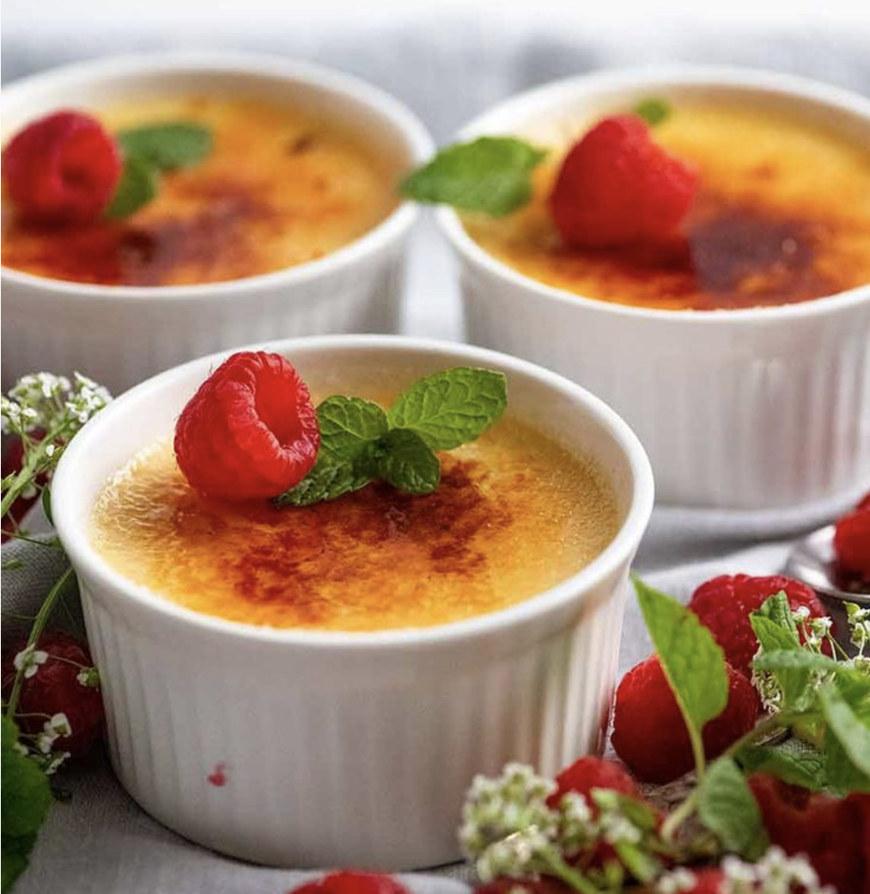

Crème brûlée

Ingredients:
- 2 cups heavy cream
- 1 vanilla bean (split and scraped)
- 5 large egg yolks
- 1/2 cup granulated sugar
- 2 tablespoons superfine sugar (for topping)
Instructions:
- Preheat oven to 325°F (160°C).
- Heat the cream with the vanilla bean until warm, then remove from heat and let cool.
- Whisk egg yolks and sugar together, then gradually mix in the cream.
- Pour the mixture into ramekins and bake in a water bath for 40–50 minutes.
- Chill the custards, then sprinkle sugar on top and caramelize with a torch before serving.